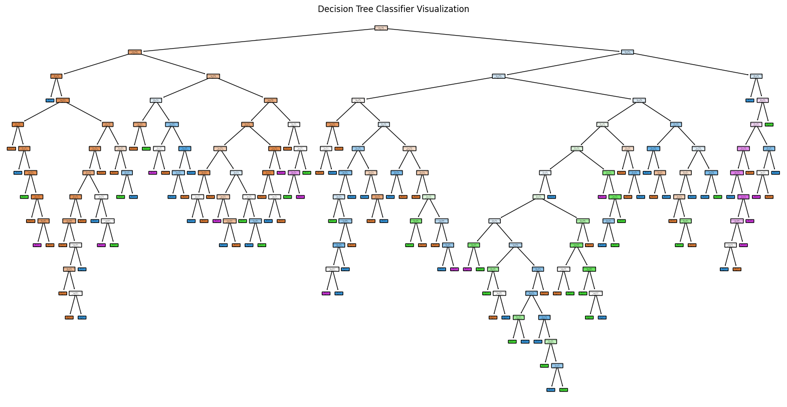

import pandas as pd
from sklearn.pipeline import Pipeline
from sklearn.neighbors import KNeighborsClassifier
from sklearn.tree import DecisionTreeClassifier
from sklearn.linear_model import LogisticRegression
from palmerpenguins import load_penguins
import numpy as np
from sklearn.pipeline import Pipeline
from sklearn.compose import make_column_selector, ColumnTransformer
from sklearn.preprocessing import StandardScaler, OneHotEncoder, PolynomialFeatures
from sklearn.compose import ColumnTransformer
from sklearn.impute import SimpleImputer
from sklearn.preprocessing import StandardScaler, OneHotEncoder
from sklearn.linear_model import LinearRegression, LogisticRegression
from sklearn.model_selection import train_test_split
from sklearn.pipeline import Pipeline
from sklearn.metrics import mean_squared_error
import warnings
from sklearn.neighbors import KNeighborsRegressor
from sklearn.tree import DecisionTreeRegressor
from sklearn.metrics import accuracy_score
from sklearn.pipeline import Pipeline
from sklearn.neighbors import KNeighborsClassifier
from sklearn.tree import DecisionTreeClassifier
from sklearn.linear_model import LogisticRegression
from sklearn.metrics import accuracy_score, roc_auc_score, classification_report, confusion_matrix
from sklearn.pipeline import Pipeline
from sklearn.neighbors import KNeighborsClassifier
from sklearn.tree import DecisionTreeClassifier
from sklearn.linear_model import LogisticRegression
from sklearn.model_selection import cross_val_score
import plotnine as plt
from plotnine import *
from sklearn.model_selection import GridSearchCV
from sklearn.model_selection import StratifiedKFoldOur dataset consists of clinical data from patients who entered the hospital complaining of chest pain (“angina”) during exercise. The information collected includes:
age: Age of the patientsex: Sex of the patientcp: Chest Pain type- Value 0: asymptomatic
- Value 1: typical angina
- Value 2: atypical angina
- Value 3: non-anginal pain
trtbps: resting blood pressure (in mm Hg)chol: cholesterol in mg/dl fetched via BMI sensorrestecg: resting electrocardiographic results- Value 0: normal
- Value 1: having ST-T wave abnormality (T wave inversions and/or ST elevation or depression of > 0.05 mV)
- Value 2: showing probable or definite left ventricular hypertrophy by Estes’ criteria
thalach: maximum heart rate achieved during exerciseoutput: the doctor’s diagnosis of whether the patient is at risk for a heart attack- 0 = not at risk of heart attack
- 1 = at risk of heart attack
ha = pd.read_csv("https://www.dropbox.com/s/aohbr6yb9ifmc8w/heart_attack.csv?dl=1")Q1: Natural Multiclass Models
Fit a multiclass KNN, Decision Tree, and LDA for the heart disease data; this time predicting the type of chest pain (categories 0 - 3) that a patient experiences. For the decision tree, plot the fitted tree, and interpret the first couple splits.
X = ha.drop("cp", axis = 1)
y= ha["cp"]KNN
param_grid = {
"knn__n_neighbors": list(range(5, 100)), # From 5 to 100 in steps of 5
"knn__weights": ["uniform", "distance"], # Different weighting schemes
"knn__p": [1, 2] # 1 for Manhattan, 2 for Euclidean distance
}
# Define the preprocessing step
ct = ColumnTransformer(
[
("dummify",
OneHotEncoder(sparse_output=False, handle_unknown='ignore'),
make_column_selector(dtype_include=object)),
("standardize",
StandardScaler(),
make_column_selector(dtype_include=np.number))
],
remainder="passthrough"
).set_output(transform="pandas")
# Define the pipeline for KNN
knn_pipeline = Pipeline(
[("preprocessing", ct),
("knn", KNeighborsClassifier())] # Default classifier
)
# Set up GridSearchCV
#grid_search = GridSearchCV(knn_pipeline, param_grid, cv=5, scoring='roc_auc', n_jobs=-1)
# Fit the GridSearchCV
grid_search = GridSearchCV(
knn_pipeline,
param_grid,
cv=StratifiedKFold(n_splits=5), # Ensures proper class distribution
scoring="roc_auc_ovr",
n_jobs=-1
)
grid_search.fit(X, y)
# Evaluate the results
print("Best Parameters:", grid_search.best_params_)
print(f"Best Cross-validated ROC AUC: {grid_search.best_score_:.4f}")
y_pred = grid_search.best_estimator_.predict(X)
print("Classification Report:")
print(classification_report(y, y_pred))
print("Confusion Matrix:")
print(confusion_matrix(y, y_pred))Best Parameters: {'knn__n_neighbors': 92, 'knn__p': 1, 'knn__weights': 'distance'}
Best Cross-validated ROC AUC: 0.6809
Classification Report:
precision recall f1-score support
0 1.00 1.00 1.00 128
1 1.00 1.00 1.00 44
2 1.00 1.00 1.00 81
3 1.00 1.00 1.00 20
accuracy 1.00 273
macro avg 1.00 1.00 1.00 273
weighted avg 1.00 1.00 1.00 273
Confusion Matrix:
[[128 0 0 0]
[ 0 44 0 0]
[ 0 0 81 0]
[ 0 0 0 20]]c:\Users\hblin\AppData\Local\Programs\Python\Python312\Lib\site-packages\numpy\ma\core.py:2881: RuntimeWarning: invalid value encountered in castLDA
from sklearn.discriminant_analysis import LinearDiscriminantAnalysis
param_grid = {
"lda__solver": ["svd", "lsqr", "eigen"], # Different solvers for LDA
"lda__priors": [None, "uniform"], # Uniform priors or None (learned from the data)
"lda__n_components": [1, 2, 3], # Different number of components (for dimensionality reduction)
"lda__shrinkage": [None, "auto", 0.1, 0.2], # Only applicable if solver="lsqr"
"lda__tol": [1e-4, 1e-3, 1e-2] # Different tolerance levels
}
# Define the preprocessing step
ct = ColumnTransformer(
[
("dummify",
OneHotEncoder(sparse_output=False, handle_unknown='ignore'),
make_column_selector(dtype_include=object)),
("standardize",
StandardScaler(),
make_column_selector(dtype_include=np.number))
],
remainder="passthrough"
).set_output(transform="pandas")
# Define the pipeline for KNN
lda_pipeline = Pipeline(
[("preprocessing", ct),
("lda", LinearDiscriminantAnalysis())] # Default classifier
)
# Set up GridSearchCV
# Fit the GridSearchCV
grid_search = GridSearchCV(
lda_pipeline,
param_grid,
cv=StratifiedKFold(n_splits=5), # Ensures proper class distribution
scoring="accuracy",
n_jobs=-1
)
grid_search.fit(X, y)
# Evaluate the results
print("Best Parameters:", grid_search.best_params_)
print(f"Best Cross-validated accuracy: {grid_search.best_score_:.4f}")
y_pred = grid_search.best_estimator_.predict(X)
print("Classification Report:")
print(classification_report(y, y_pred))
print("Confusion Matrix:")
print(confusion_matrix(y, y_pred))
Best Parameters: {'lda__n_components': 1, 'lda__priors': None, 'lda__shrinkage': 'auto', 'lda__solver': 'lsqr', 'lda__tol': 0.0001}
Best Cross-validated accuracy: 0.5533
Classification Report:
precision recall f1-score support
0 0.72 0.77 0.74 128
1 0.25 0.05 0.08 44
2 0.44 0.68 0.54 81
3 0.40 0.10 0.16 20
accuracy 0.58 273
macro avg 0.45 0.40 0.38 273
weighted avg 0.54 0.58 0.53 273
Confusion Matrix:
[[98 2 27 1]
[ 8 2 32 2]
[22 4 55 0]
[ 8 0 10 2]]c:\Users\hblin\AppData\Local\Programs\Python\Python312\Lib\site-packages\sklearn\model_selection\_validation.py:540: FitFailedWarning:
675 fits failed out of a total of 1080.
The score on these train-test partitions for these parameters will be set to nan.
If these failures are not expected, you can try to debug them by setting error_score='raise'.
Below are more details about the failures:
--------------------------------------------------------------------------------
135 fits failed with the following error:
Traceback (most recent call last):
File "c:\Users\hblin\AppData\Local\Programs\Python\Python312\Lib\site-packages\sklearn\model_selection\_validation.py", line 888, in _fit_and_score
estimator.fit(X_train, y_train, **fit_params)
File "c:\Users\hblin\AppData\Local\Programs\Python\Python312\Lib\site-packages\sklearn\base.py", line 1473, in wrapper
return fit_method(estimator, *args, **kwargs)
^^^^^^^^^^^^^^^^^^^^^^^^^^^^^^^^^^^^^^
File "c:\Users\hblin\AppData\Local\Programs\Python\Python312\Lib\site-packages\sklearn\pipeline.py", line 473, in fit
self._final_estimator.fit(Xt, y, **last_step_params["fit"])
File "c:\Users\hblin\AppData\Local\Programs\Python\Python312\Lib\site-packages\sklearn\base.py", line 1473, in wrapper
return fit_method(estimator, *args, **kwargs)
^^^^^^^^^^^^^^^^^^^^^^^^^^^^^^^^^^^^^^
File "c:\Users\hblin\AppData\Local\Programs\Python\Python312\Lib\site-packages\sklearn\discriminant_analysis.py", line 629, in fit
raise NotImplementedError("shrinkage not supported with 'svd' solver.")
NotImplementedError: shrinkage not supported with 'svd' solver.
--------------------------------------------------------------------------------
540 fits failed with the following error:
Traceback (most recent call last):
File "c:\Users\hblin\AppData\Local\Programs\Python\Python312\Lib\site-packages\sklearn\model_selection\_validation.py", line 888, in _fit_and_score
estimator.fit(X_train, y_train, **fit_params)
File "c:\Users\hblin\AppData\Local\Programs\Python\Python312\Lib\site-packages\sklearn\base.py", line 1473, in wrapper
return fit_method(estimator, *args, **kwargs)
^^^^^^^^^^^^^^^^^^^^^^^^^^^^^^^^^^^^^^
File "c:\Users\hblin\AppData\Local\Programs\Python\Python312\Lib\site-packages\sklearn\pipeline.py", line 473, in fit
self._final_estimator.fit(Xt, y, **last_step_params["fit"])
File "c:\Users\hblin\AppData\Local\Programs\Python\Python312\Lib\site-packages\sklearn\base.py", line 1466, in wrapper
estimator._validate_params()
File "c:\Users\hblin\AppData\Local\Programs\Python\Python312\Lib\site-packages\sklearn\base.py", line 666, in _validate_params
validate_parameter_constraints(
File "c:\Users\hblin\AppData\Local\Programs\Python\Python312\Lib\site-packages\sklearn\utils\_param_validation.py", line 95, in validate_parameter_constraints
raise InvalidParameterError(
sklearn.utils._param_validation.InvalidParameterError: The 'priors' parameter of LinearDiscriminantAnalysis must be an array-like or None. Got 'uniform' instead.
c:\Users\hblin\AppData\Local\Programs\Python\Python312\Lib\site-packages\sklearn\model_selection\_search.py:1103: UserWarning: One or more of the test scores are non-finite: [0.54242424 0.54242424 0.54242424 0.54242424 0.54242424 0.54242424
0.54242424 0.54242424 0.54242424 nan nan nan
0.55333333 0.55333333 0.55333333 0.55333333 0.55333333 0.55333333
nan nan nan 0.54242424 0.54242424 0.54242424
0.54242424 0.54242424 0.54242424 nan nan nan
0.54606061 0.54606061 0.54606061 0.54606061 0.54606061 0.54606061
nan nan nan nan nan nan
nan nan nan nan nan nan
nan nan nan nan nan nan
nan nan nan nan nan nan
nan nan nan nan nan nan
nan nan nan nan nan nan
0.54242424 0.54242424 0.54242424 0.54242424 0.54242424 0.54242424
0.54242424 0.54242424 0.54242424 nan nan nan
0.55333333 0.55333333 0.55333333 0.55333333 0.55333333 0.55333333
nan nan nan 0.54242424 0.54242424 0.54242424
0.54242424 0.54242424 0.54242424 nan nan nan
0.54606061 0.54606061 0.54606061 0.54606061 0.54606061 0.54606061
nan nan nan nan nan nan
nan nan nan nan nan nan
nan nan nan nan nan nan
nan nan nan nan nan nan
nan nan nan nan nan nan
nan nan nan nan nan nan
0.54242424 0.54242424 0.54242424 0.54242424 0.54242424 0.54242424
0.54242424 0.54242424 0.54242424 nan nan nan
0.55333333 0.55333333 0.55333333 0.55333333 0.55333333 0.55333333
nan nan nan 0.54242424 0.54242424 0.54242424
0.54242424 0.54242424 0.54242424 nan nan nan
0.54606061 0.54606061 0.54606061 0.54606061 0.54606061 0.54606061
nan nan nan nan nan nan
nan nan nan nan nan nan
nan nan nan nan nan nan
nan nan nan nan nan nan
nan nan nan nan nan nan
nan nan nan nan nan nan]Decision Tree
param_grid = {
"dt__max_depth": [3, 5, 7, 10, None], # Vary max depth of the tree
"dt__min_samples_split": [2, 5, 10], # Vary minimum samples to split
"dt__min_samples_leaf": [1, 2, 4], # Vary minimum samples per leaf
"dt__criterion": ["gini", "entropy"] # Vary the splitting criterion
}
# Define the pipeline with DecisionTreeClassifier
dt_pipeline = Pipeline(
[("preprocessing", ct),
("dt", DecisionTreeClassifier(random_state=52))]
)
# Set up GridSearchCV for cross-validation and hyperparameter search
grid_search = GridSearchCV(dt_pipeline, param_grid, cv=StratifiedKFold(n_splits=5), scoring='roc_auc_ovr', n_jobs=-1)
# Fit the GridSearchCV with your data
grid_search.fit(X, y)
# Retrieve and print the best parameters from the grid search
print("Best Parameters:", grid_search.best_params_)
# Retrieve and print the best cross-validated ROC AUC score
print(f"Best Cross-validated ROC AUC: {grid_search.best_score_:.4f}")
# Use the best model to predict on the same dataset for exploration
best_model = grid_search.best_estimator_
y_pred = best_model.predict(X)
# Evaluate predictions (optional)
print("Classification Report on Entire Dataset:")
print(classification_report(y, y_pred))
cm = confusion_matrix(y, y_pred)
print("Confusion Matrix:")
print(cm)
transformed_X = ct.fit_transform(X)
Best Parameters: {'dt__criterion': 'gini', 'dt__max_depth': 3, 'dt__min_samples_leaf': 1, 'dt__min_samples_split': 5}
Best Cross-validated ROC AUC: 0.6583
Classification Report on Entire Dataset:
precision recall f1-score support
0 0.69 0.83 0.75 128
1 0.00 0.00 0.00 44
2 0.48 0.59 0.53 81
3 0.42 0.40 0.41 20
accuracy 0.59 273
macro avg 0.40 0.46 0.42 273
weighted avg 0.50 0.59 0.54 273
Confusion Matrix:
[[106 0 19 3]
[ 12 0 30 2]
[ 27 0 48 6]
[ 8 0 4 8]]c:\Users\hblin\AppData\Local\Programs\Python\Python312\Lib\site-packages\sklearn\metrics\_classification.py:1531: UndefinedMetricWarning: Precision is ill-defined and being set to 0.0 in labels with no predicted samples. Use `zero_division` parameter to control this behavior.
c:\Users\hblin\AppData\Local\Programs\Python\Python312\Lib\site-packages\sklearn\metrics\_classification.py:1531: UndefinedMetricWarning: Precision is ill-defined and being set to 0.0 in labels with no predicted samples. Use `zero_division` parameter to control this behavior.
c:\Users\hblin\AppData\Local\Programs\Python\Python312\Lib\site-packages\sklearn\metrics\_classification.py:1531: UndefinedMetricWarning: Precision is ill-defined and being set to 0.0 in labels with no predicted samples. Use `zero_division` parameter to control this behavior.dt_pipeline = Pipeline(
[("preprocessing", ct),
("dt", DecisionTreeClassifier(random_state=52))]
)
dtpipeline = dt_pipeline.fit(X,y)
decision_tree = dt_pipeline.named_steps['dt']
# Plot the decision tree
plt.figure(figsize=(20, 10))
plot_tree(
decision_tree,
filled=True,
feature_names=dt_pipeline.named_steps['preprocessing'].get_feature_names_out(),
class_names=decision_tree.classes_.astype(str),
rounded=True,
proportion=False,
precision=2
)
plt.title("Decision Tree Classifier Visualization")
plt.show()
Q2: OvR
Create a new column in the ha dataset called cp_is_3, which is equal to 1 if the cp variable is equal to 3 and 0 otherwise.
Then, fit a Logistic Regression to predict this new target, and report the F1 Score.
Repeat for the other three cp categories. Which category was the OvR approach best at distinguishing?
ha['cp_is_3'] = (ha['cp'] == 3).astype(int)
ha['cp_is_2'] = (ha['cp'] == 2).astype(int)
ha['cp_is_1'] = (ha['cp'] == 1).astype(int)
ha['cp_is_0'] = (ha['cp'] == 0).astype(int)
X_ovr = ha.drop(["cp", "cp_is_2","cp_is_1","cp_is_0"], axis = 1)
y_ovr = ha['cp_is_0']param_grid = {
"lgr__C": [0.001, 0.1, 1, 10, 100], # Regularization strength
"lgr__penalty": ["l2"], # L2 penalty (regularization term)
"lgr__solver": ["lbfgs", "liblinear"], # Different solvers
}
# Define the preprocessing step
ct = ColumnTransformer(
[
("dummify",
OneHotEncoder(sparse_output=False, handle_unknown='ignore'),
make_column_selector(dtype_include=object)),
("standardize",
StandardScaler(),
make_column_selector(dtype_include=np.number))
],
remainder="passthrough"
).set_output(transform="pandas")
# Define the pipeline for Logistic Regression
lgr_pipeline = Pipeline(
[("preprocessing", ct),
("lgr", LogisticRegression())] # Default classifier
)
cv=StratifiedKFold(n_splits=5)
# Set up GridSearchCV
grid_search = GridSearchCV(lgr_pipeline, param_grid, cv=cv, scoring='roc_auc_ovr', n_jobs=-1)
# Fit the GridSearchCV
grid_search.fit(X_ovr, y_ovr)
# Retrieve and print the best parameters
print("Best Parameters:", grid_search.best_params_)
# Retrieve and print the cross-validated ROC AUC for the best model
print(f"Best Cross-validated ROC AUC: {grid_search.best_score_:.4f}")
# Use the best model to predict on the same dataset for exploration
best_model = grid_search.best_estimator_
y_pred = best_model.predict(X_ovr)
# Evaluate predictions (optional)
print("Classification Report on Entire Dataset:")
print(classification_report(y_ovr, y_pred))
cm = confusion_matrix(y_ovr, y_pred)
print("Confusion Matrix:")
print(cm)
TN, FP, FN, TP = cm.ravel()
# Calculate the True Negative Rate (TNR) or Specificity
tnr = TN / (TN + FP)
print(f"True Negative Rate (Specificity): {tnr:.4f}") Best Parameters: {'lgr__C': 1, 'lgr__penalty': 'l2', 'lgr__solver': 'liblinear'}
Best Cross-validated ROC AUC: 0.8351
Classification Report on Entire Dataset:
precision recall f1-score support
0 0.79 0.80 0.80 145
1 0.77 0.77 0.77 128
accuracy 0.78 273
macro avg 0.78 0.78 0.78 273
weighted avg 0.78 0.78 0.78 273
Confusion Matrix:
[[116 29]
[ 30 98]]
True Negative Rate (Specificity): 0.8000F1 Scores:
It seems that the model is best at predicting class 0’s
3: 0
2: .42
1: 0
0: .77
Q3: OvO
Reduce your dataset to only the 0 and 1 types of chest pain.
Then, fit a Logistic Regression to predict between the two groups, and report the ROC-AUC.
Repeat comparing category 0 to 2 and 3. Which pair was the OvO approach best at distinguishing?
ha_ovo = ha
ha_ovo = ha_ovo[ha_ovo['cp'].isin([0, 2])]X_ovo = ha_ovo.drop(["cp"], axis = 1)
y_ovo = ha_ovo['cp']param_grid = {
"lgr__C": [0.001, 0.1, 1, 10, 100], # Regularization strength
"lgr__penalty": ["l2"], # L2 penalty (regularization term)
"lgr__solver": ["lbfgs", "liblinear"], # Different solvers
}
# Define the preprocessing step
ct = ColumnTransformer(
[
("dummify",
OneHotEncoder(sparse_output=False, handle_unknown='ignore'),
make_column_selector(dtype_include=object)),
("standardize",
StandardScaler(),
make_column_selector(dtype_include=np.number))
],
remainder="passthrough"
).set_output(transform="pandas")
# Define the pipeline for Logistic Regression
lgr_pipeline = Pipeline(
[("preprocessing", ct),
("lgr", LogisticRegression())] # Default classifier
)
cv=StratifiedKFold(n_splits=5)
# Set up GridSearchCV
grid_search = GridSearchCV(lgr_pipeline, param_grid, cv=cv, scoring='roc_auc_ovo', n_jobs=-1)
# Fit the GridSearchCV
grid_search.fit(X_ovo, y_ovo)
# Retrieve and print the best parameters
print("Best Parameters:", grid_search.best_params_)
# Retrieve and print the cross-validated ROC AUC for the best model
print(f"Best Cross-validated ROC AUC: {grid_search.best_score_:.4f}")
# Use the best model to predict on the same dataset for exploration
best_model = grid_search.best_estimator_
y_pred = best_model.predict(X_ovo)
# Evaluate predictions (optional)
print("Classification Report on Entire Dataset:")
print(classification_report(y_ovo, y_pred))
cm = confusion_matrix(y_ovo, y_pred)
print("Confusion Matrix:")
print(cm)
# TN, FP, FN, TP = cm.ravel()
# # Calculate the True Negative Rate (TNR) or Specificity
# tnr = TN / (TN + FP)
# print(f"True Negative Rate (Specificity): {tnr:.4f}") Best Parameters: {'lgr__C': 0.001, 'lgr__penalty': 'l2', 'lgr__solver': 'lbfgs'}
Best Cross-validated ROC AUC: 1.0000
Classification Report on Entire Dataset:
precision recall f1-score support
0 0.61 1.00 0.76 128
2 0.00 0.00 0.00 81
accuracy 0.61 209
macro avg 0.31 0.50 0.38 209
weighted avg 0.38 0.61 0.47 209
Confusion Matrix:
[[128 0]
[ 81 0]]c:\Users\hblin\AppData\Local\Programs\Python\Python312\Lib\site-packages\sklearn\metrics\_classification.py:1531: UndefinedMetricWarning: Precision is ill-defined and being set to 0.0 in labels with no predicted samples. Use `zero_division` parameter to control this behavior.
c:\Users\hblin\AppData\Local\Programs\Python\Python312\Lib\site-packages\sklearn\metrics\_classification.py:1531: UndefinedMetricWarning: Precision is ill-defined and being set to 0.0 in labels with no predicted samples. Use `zero_division` parameter to control this behavior.
c:\Users\hblin\AppData\Local\Programs\Python\Python312\Lib\site-packages\sklearn\metrics\_classification.py:1531: UndefinedMetricWarning: Precision is ill-defined and being set to 0.0 in labels with no predicted samples. Use `zero_division` parameter to control this behavior.ROC AUCS:
0-1: 1
0-2: 1
0-3: 1